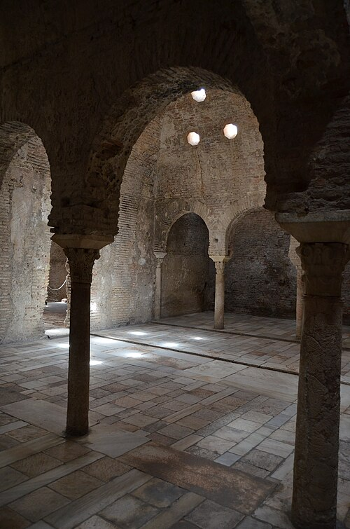
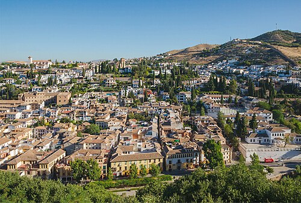
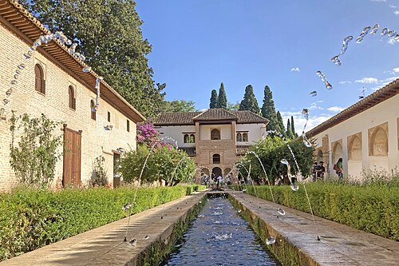

This map shows 17 of the most-searched sights in Granada as photo spots, ranked by how often people search for them: Alhambra, El Bañuelo, Granada Cathedral, Sacromonte and Generalife lead the list. Every spot has a pin on the subject and a phone icon showing where to stand, with tips for shooting it on your phone: which lens to use, how to frame it, a settings tip and the best time of day. Directions and Navigate buttons take you to the standing point on foot or by public transport. 3 spots are free to view; the full map is for members.
The 3 free photo spots
2El Bañuelo

El Bañuelo is a preserved Islamic bathhouse (hammam) in Granada's Albaicín quarter, on the banks of the Darro River. It is traditionally dated to the 11th century, though some researchers think it is 12th century or later. It stayed in use as a bathhouse until the 16th century, and later served as a public laundry and then a dwelling. It was declared a Cultural Heritage Property of Spain in 1918, and it is now open to visitors. It is also the only restored hammam in Granada, outside the Alhambra, that the public can visit.
It photographs well because the rooms are laid out in a row, with columns and horseshoe arches that make natural frames. The largest room, the warm room, has a central vault resting on marble columns. Many of the column tops were reused from Roman and Caliphal buildings. The ceilings are pierced with small star-shaped and octagonal skylights, which let in thin beams of light and let steam escape. The first room, with its square water basin, is open to the sky today, though it once had a wooden dome.
Expect low light indoors, so keep your phone steady against a wall or column and take a couple of frames of each view. Look for repeating arches leading your eye down the rooms, and for the skylights as bright points in the vault. Check the official site before you go for visiting arrangements and any photography rules.
Where it is: El Bañuelo is in the Albaicín quarter of Granada, on the banks of the Darro River.
Shooting it on your phone
Lens: Start with the default lens (1x) for the rooms and arches. Switch to ultra-wide (0.5x) in the smaller chambers where you cannot step back. Use telephoto (2x or more, depending on your phone) for column tops and skylights.
Where to stand: Stand right at the subject: the phone icon on the map marks the spot. Inside, take your main photos from the doorways between rooms, looking along the line of columns and horseshoe arches. In the open first room, stand back from the water basin so you can include it in the frame.
Framing: Switch on gridlines and line up the arches symmetrically, so the columns sit either side of the frame. Include the water basin or the floor in the foreground for depth. For a detail shot, zoom in on a column top or a star-shaped skylight in the vault.
Settings tip: Tap on the brightest skylight, then slide the exposure slider down a little so the vault keeps its detail and the light beams stay clear. If the room is very dark, try night mode and brace your elbows against your body or a wall to keep still.
Best time: Choose a time when the skylights are bright, usually around the middle of the day, so that beams of light cross the dim rooms. Go early or late in the day for fewer people in your shots.
4Sacromonte

Sacromonte is the hillside neighbourhood in the east of Granada, facing the Alhambra across the valley of the Darro. It is known for its cave houses, dug into the slope and finished with whitewashed fronts. The caves are thought to date from the 16th century, and no two are the same, because each follows the shape of the hill. The area has long been associated with Granada's Romani community, who settled in the city after 1492. It also takes its name from the 'Lead Books' story of the late 1590s, which led to the building of the Abbey of Sacromonte in the 17th century.
It photographs well because the white houses, the olive-green slopes and the Alhambra all fit into one wide view. The most rewarding spot is a high terrace, the Mirador de San Miguel Alto, beside a hermitage. From there you look over the Sacromonte hillside to the Alhambra and the city below. It is a quieter, higher alternative to the lookouts closer to the houses. If you want the cave houses as the main subject, the Mirador de la Vereda de Enmedio shows them with the Alhambra behind.
The climb up is steep, so allow time and wear sensible shoes. Keep your phone and belongings close when you walk the lanes lower down.
Where it is: Sacromonte is in the eastern part of Granada, on the hillside and valley opposite the Alhambra. It is part of the wider Albayzín district and borders the Albayzín itself.
Shooting it on your phone
Lens: Start with the ultra-wide (0.5x) for the full sweep of hillside, city and Alhambra. Then switch to the default lens (1x) for a calmer, more natural view. Use telephoto (2x-5x, depending on your phone) to pick out the Alhambra or a group of whitewashed houses.
Where to stand: Stand on Mirador de San Miguel Alto. A high panorama across the Sacromonte hillside, with the Alhambra and the city below, taken from beside the hermitage. From here the photo shows a high panorama over the Sacromonte hillside, with the Alhambra and the city below.
Framing: Turn on the gridlines and put the horizon on the top third line, so the hillside and the Alhambra fill most of the picture. Use the nearest terrace edge or a hillside plant as a foreground to give a sense of depth. The Alhambra is the main target from this side, so for close shots of the cave houses, try the Mirador de la Vereda de Enmedio instead.
Settings tip: Tap on the Alhambra to set focus, then slide the exposure down a little so the sky keeps its colour. Try panorama mode for the widest sweep, moving slowly and keeping the phone level.
Best time: Sunset is the recommended time. It can be busier then, so arrive early to get a good spot at the terrace.
5Generalife

The Generalife was the summer palace and country estate of the Nasrid rulers of Granada. It stands directly east of the Alhambra and uphill from it, so from across the valley it sits beside the red Alhambra walls with the mountains behind. Its gardens are laid out on three long terraces, each about 35 metres wide and 250 metres long, which gives the hillside a layered, green look even from far away. The palace is thought to date from the end of the 13th century, probably built under Muhammad II, and it has been a UNESCO World Heritage Site together with the Alhambra since 1984.
The most useful view for a phone photo is the outside one. From Mirador de San Nicolás, the small square in front of the San Nicolás church in the Albaicín, the Generalife sits on the left of the frame. The Alhambra towers, the Sierra Nevada and the city rooftops fill the rest. It is a free viewpoint and guides treat it as the classic exterior view, but it gets very crowded, with vendors nearby. Arrive early if you want a clear spot, and shoot a few frames at different zoom levels while you wait for the light. If you want a closer, upward-looking view, Mirador de los Carvajales is an alternative, showing the Generalife and the Alhambra's red walls from below.
Where it is: The Generalife is on the hillside directly east of and uphill from the Alhambra, in Granada. The best outside view is from Mirador de San Nicolás in the Albaicín district, looking across the valley.
Shooting it on your phone
Lens: Use the default lens (1x) for the whole view of the Alhambra hill, mountains and city. Switch to telephoto (2x-5x, depending on your phone) to pick out the Generalife and its terraces. The ultra-wide (0.5x) will make the Generalife look very small, so save it for the rooftops and sky.
Where to stand: Stand in Mirador de San Nicolás (small square in front of the San Nicolás church, Albaicín). The Generalife on the left of the frame, with the Alhambra towers, the Sierra Nevada behind, and the city below. Look south-east across the valley. From here the Generalife sits on the left of the frame, with the Alhambra towers, the Sierra Nevada behind and the city below.
Framing: Turn on the gridlines and place the Generalife on the left third, with the Alhambra towers in the middle and the mountains along the top. Include a strip of rooftops at the bottom for depth. For a tighter picture, zoom to 3x or 5x and fill the frame with the walls and terraces. If you want a different angle, Mirador de los Carvajales looks up at the Generalife and the red walls from below.
Settings tip: Tap on the Generalife to set focus, then slide the exposure down a little so the bright sky does not wash out the red walls. Hold the phone against the wall or your body when zooming, to keep the picture sharp.
Best time: Sunset, when the light falls on the red walls. The viewpoint gets very crowded, so arrive early to get a good spot.
14 more spots for members
These spots are on the map as grey numbered pins. Where to stand, the phone tips, photos and directions for them come with Explorer membership.
- 1Alhambra · members
- 3Granada Cathedral · members
- 6Royal Chapel of Granada · members
- 7Parque de las Ciencias (Granada) · members
- 8Alcaicería of Granada · members
- 9Palace of Charles V · members
- 10Court of the Lions · members
- 11Alcazaba of the Alhambra · members
- 12Puerta Real (Granada) · members
- 13Madrasa of Granada · members
- 14Corral del Carbón · members
- 15Gate of Elvira · members
- 16Monasterio de San Jerónimo, Granada · members
- 17Church of San Salvador (Granada) · members
Get every spot with Explorer membership
Explorer opens every spot on every map in the library: where to stand, how to frame it on your phone and how to get there, plus the Xdatrys Maps app with maps saved on your phone for use without signal. $9.99 a month or $59.99 a year; cancel any time.
Join Explorer Compare free and Explorer
Not ready to join?
Get Pocket Lens, our free daily smartphone travel photography newsletter.
Free, and you can unsubscribe at any time. If the form does not show, sign up on our newsletter page.
Questions
What are the top photo spots in Granada?
The first three on this map are Alhambra, El Bañuelo and Granada Cathedral. They are ranked by how often people search for them. The full map has 17.
Where should I stand to photograph El Bañuelo?
Stand right at El Bañuelo: the phone icon on the map marks the spot. Start with the default lens (1x) for the rooms and arches.
When is the best time to photograph the Sacromonte?
Sunset is the recommended time. It can be busier then, so arrive early to get a good spot at the terrace.
How do I get to the Generalife?
Head for the Albaicín, the old district facing the Alhambra across the valley, and ask for Mirador de San Nicolás, the small square in front of the San Nicolás church.
Credits
Map data © OpenStreetMap contributors (ODbL); base map built with Protomaps from OpenStreetMap data. Photos from Wikimedia Commons, credited under each photo with their licence. Background reading for the free spots: El Bañuelo, Sacromonte, Generalife (Wikipedia, CC BY-SA). Access rules and opening times change: check before you go.